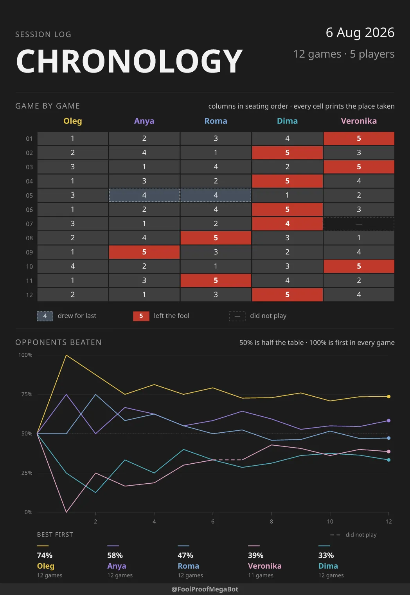
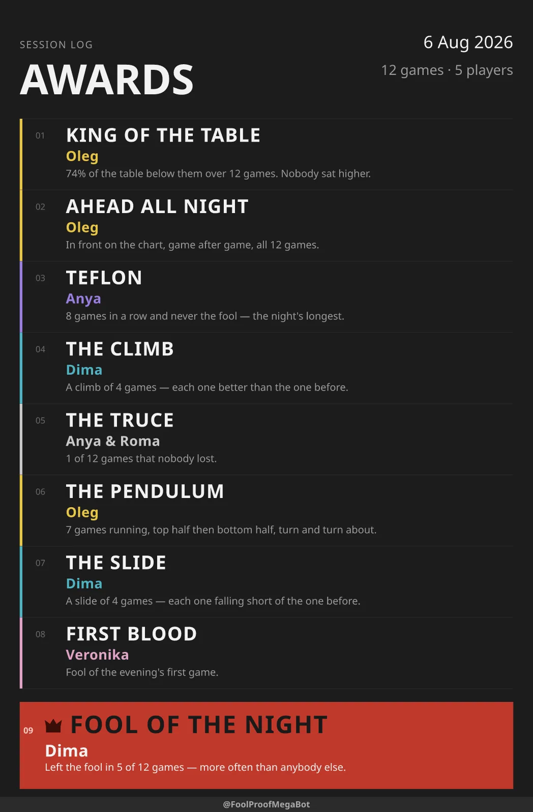
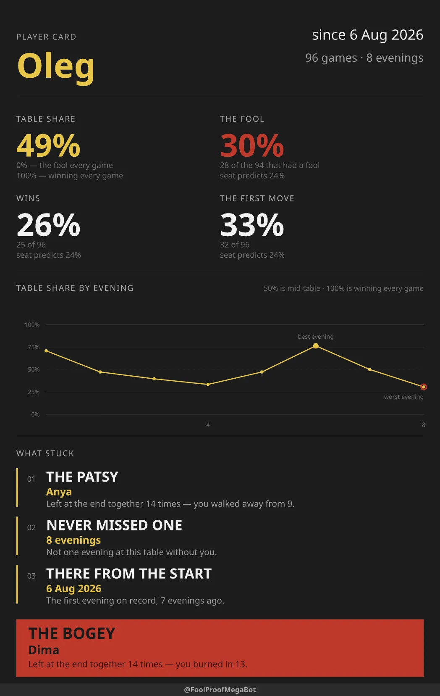

Telegram bot · Podkidnoy Durak · free
You play the cards. FoolProof keeps the score.
Add it to the group chat where your table gathers. Send the line-up once, then tap who went first and tap each player out. By the end of the night, the whole evening comes back as two posters — and any player's whole record as a third.
No accounts · nothing to install · reads only commands and replies to its own messages
Game 3
Went first: Oleg
An evening, end to end
Three actions, and only one of them repeats
-
Step 1
Send the line-up
/game Oleg, Anya, Roma— the list is the seating order, clockwise. The bot opens one card in the chat. -
Step 2
Tap who went out
First tap who went first, then one tap per player in the order they finish, then Confirm. Whoever is left unmarked is the fool. There is nothing to type.
-
Step 3
Ask how it went
/statsdraws the chronology, and the awards too once five games are in./personaldraws one player across every evening they have played./nextopens the same table again — the fool's neighbour goes first.
What the bot draws
Drawn rather than listed
All three are drawn by the bot itself, sized to be read at arm's length across a table after Telegram has recompressed them.

/stats_chronology
The chronology
A row per game, a column per player. It marks only what an ordinary finish is not: drew for last, left the fool, did not play.

/stats_awards
The awards
More than forty exist and nine fit, so the poster keeps the king and the fool and shares the rest around the table, rarest first — which is what stops every Friday reading the same.

/personal
The player's card
One player across everything they ever played. Twenty facts compete for four places, so two people at the same table rarely get cards that read alike.
Why it is shaped this way
Built for a Friday evening
-
Taps, not typing
Input happens on a phone, one-handed, between games. So the whole product is one message with a keyboard on it.
-
It cannot read the rest
In Telegram's default privacy mode a bot receives only commands and replies to its own messages. Your conversation never reaches it.
-
A restart costs nothing
The card is rebuilt from what was recorded, so a crash or a deploy in the middle of a game leaves the evening intact.
-
One player, two names
Somebody types Anya once and Ania the rest of the night.
/mergefolds them back into one person. -
English or Russian
/languagesets the language for that chat — including the words printed on the posters. -
Two to ten at the table
/next_withand/next_withoutchange the line-up when somebody arrives or goes home.
Before you add it
Questions
- Is it free?
- Yes. No accounts, no ads, nothing to buy.
- Does it read our chat?
- No. Left in Telegram's default privacy mode, a bot receives only commands and replies to its own messages. The rest of the conversation never reaches it.
- What does it store?
- The names you send it, the results of the games played in that chat — each tap recorded with the Telegram id of whoever made it — and which language that chat picked. Nothing else.
- Which Durak does it score?
- Podkidnoy, two to ten players. It records the finishing order and the fool — it does not deal cards or referee the game.
- Do I have to install anything?
-
No. Add the bot to your group and send
/gamewith the names. - Can I run my own copy?
- Yes. The whole thing is open source under MIT — it needs Node 24 and has no build step.
Your table plays on Friday.
Let the score keep itself this time. Adding the bot is one tap, and the only thing you will ever type is names — and only when the line-up changes.